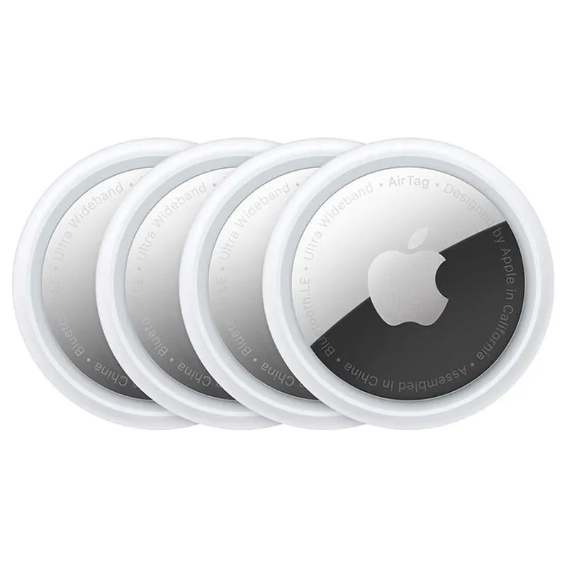
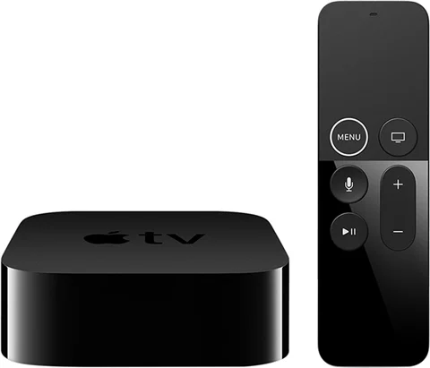

Airpods

Aquest article ens explica com els AirPods i AirPods Pro poden
violar la privacitat al cloud en formar part d’una xarxa digital constantment
connectada. Tot i ser uns auriculars fan servir micròfons, això vol dir,
connexió a serveis en el núvol i enllaç amb l’ID d’Apple. Això implica la
recopilació i tractament de dades personals com informació de l’usuari, l’ús del
dispositiu i interaccions amb assistents de veu. L’article ens destaca que
aquestes dades poden ser guardades o processades al núvol, i això pot generar
riscos si no hi ha un control total sobre els permisos i el xifrat. Tot i que
Apple aplica mesures de seguretat, desde Mozilla ens adverteixen de que cap
dispositiu connectat és completament segur i ens recomana revisar la configuració
de privacitat, limitar l’accés a dades innecessàries i mantenir els dispositius
actualitzats.
Airtags

Aquest article parla sobre els Air Tags d’Apple i com poden relacionarse amb problemes
de privacitat del Cloud perque son petits dispositius que t‘ajudan a fer un seguiment
dels teus objectes perduts. Apple ha fet canvis per evitar usos abusius de l’AirTag.
Ara l’aparell sona si està a prop teu, però els experts encara estan preocupats perquè
els abusos poden passar malgrat les mesures de seguretat. Apple recull dades com la ubicació
i informació del dispositiu per fer funcionar els serveis, i tota aquesta informació es guarda
o es processa al núvol. Els AirTags funcionen molt bé per trobar coses perdudes, però això també
significa que, si algú els usa sense el teu consentiment, podria seguir els teus moviments sense
donar-te compte. L’article diu que, encara que Apple protegeix la privacitat, cap dispositiu
connectat és completament segur. Recomana canviar la configuració de privacitat i revisar els
permisos per reduir els riscos.
Apple TV 4k

L’article ens explica com l’Apple TV 4K pot tenir problemes de privacitat relacionats amb
el cloud perquè recopila i utilitza certa informació personal sobre el que veus, compres o
descarregues mentre l’utilitzes. Quan et connectes amb el teu Apple ID, Apple pot saber dades
com el teu nom, correu electrònic, edat o el que mires per personalitzar recomanacions de contingut
i mostrar anuncis. També comparteix dades no personals amb socis perquè puguin veure com funcionen
els seus programes o serveis. Tot això es fa a través de la seva política de privacitat i serveis al
núvol, cosa que pot preocupar algunes persones si no saben exactament com s’utilitzen aquestes dades.
L’article indica que Apple intenta protegir la privacitat i manté actualitzacions de seguretat,
però recomana revisar la configuració de privacitat, limitar l’accés a la informació personal i
mantenir el dispositiu actualitzat per reduir els riscos.